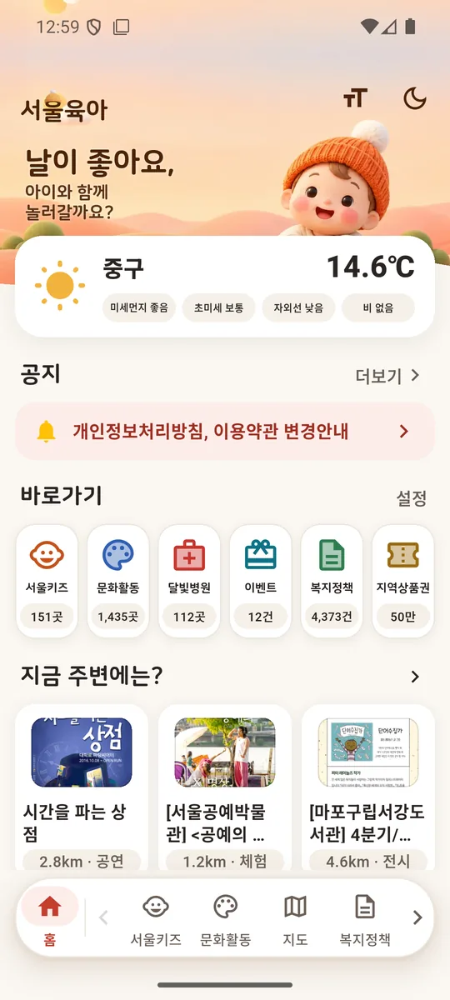
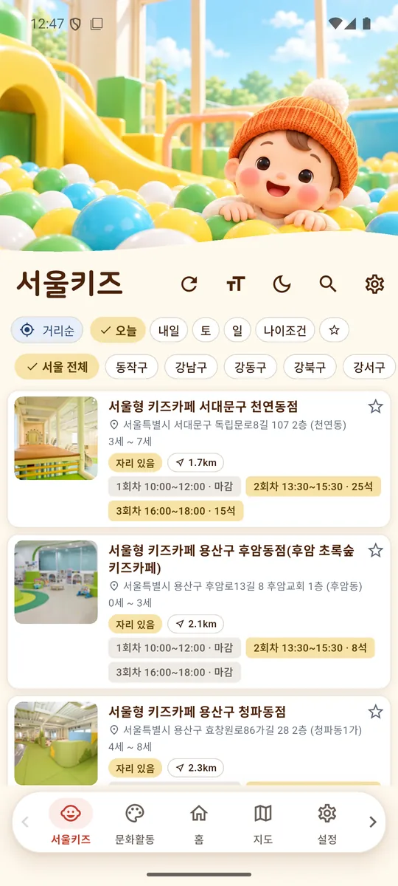
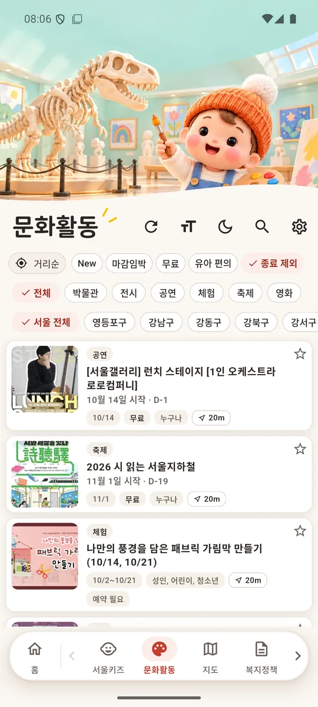
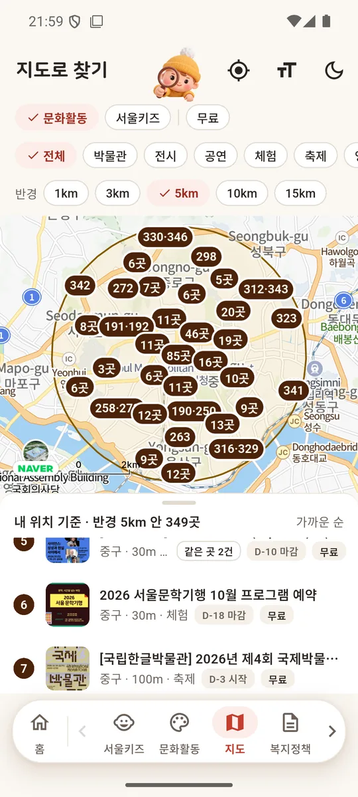
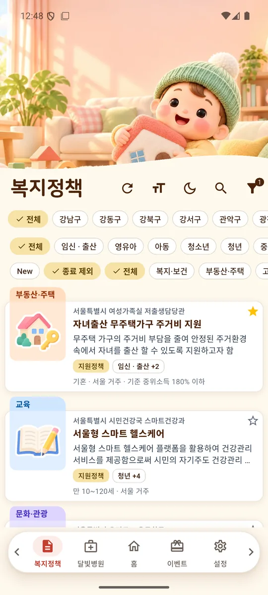
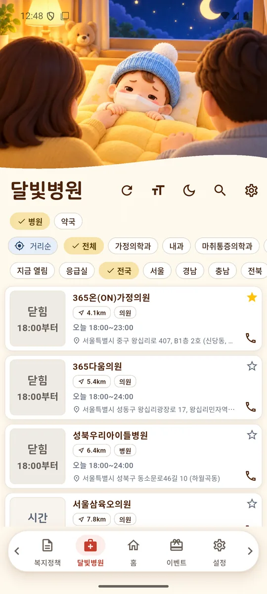
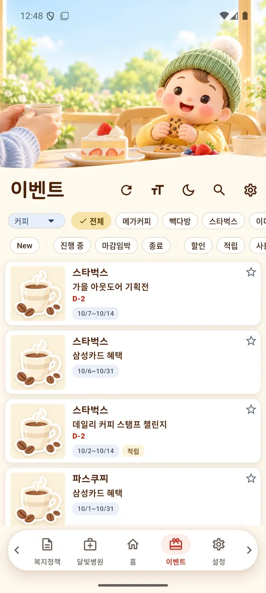
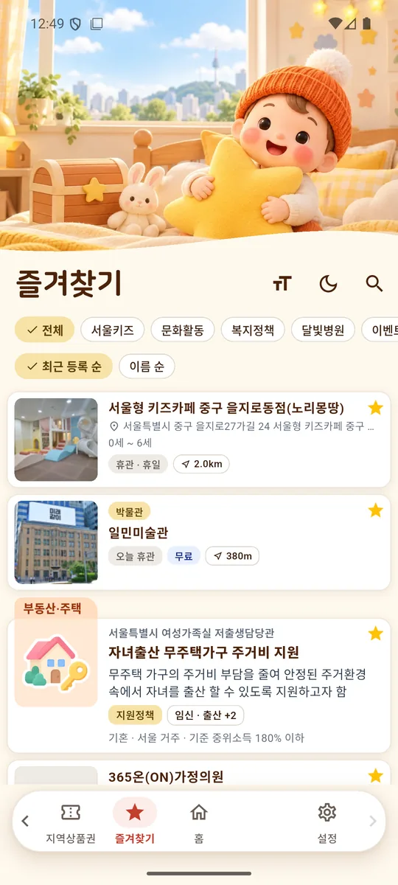

서울에서 아이를 키우는 데 필요한 정보 — 지원 제도, 야간 소아진료, 서울형 키즈카페, 교육·체험 문화행사와 육아 브랜드 행사 — 를 한 화면에서 확인하는 안드로이드 앱입니다.
Android 앱 · 회원가입 없음개인정보처리방침·이용약관 개정 안내 (시행 2026년 10월 20일)
서울육아에 목록 화면의 광고를 없애는 ‘광고 없애기’가 생깁니다 — 매월 정기결제, 또는 한 번 결제하는 영구 제거(10월 13일 추가). 정보와 기능은 지금처럼 모두 무료이며, 광고를 원하지 않는 분만 선택하시면 됩니다. 이에 따라 개인정보처리방침과 이용약관을 다음과 같이 바꿉니다.
| 무엇 | 지금 | 바뀐 뒤 |
|---|---|---|
| 이용 요금 | 무료 · 결제 기능 없음 | 정보와 기능은 그대로 무료 · ‘광고 없애기’를 선택할 수 있음 — 정기결제(1개월 단위 자동 갱신 · Google Play에서 언제든 해지) 또는 영구 제거(한 번 결제 · 앱을 제공하는 동안) |
| 결제 정보 | — | 결제는 Google Play가 처리 · 개발자는 결제수단 정보를 받지 않음 · Google Play가 주는 주문 정보(주문 번호·상품·금액·주문 상태 등)는 주문 확인·문의·환불 처리와 회계·세무에만 이용 · 정기결제 확인 결과는 기기 안에만 저장 |
| 이용약관 | 앱은 무료이며 결제 기능 없음 | 제4조의2 신설 — 자동 갱신 · 해지(앱 삭제만으로는 해지되지 않음) · 환불 · 정기결제 요금 인상 시 30일 이내 안내와 동의 · 같은 계정이면 기기를 바꿔도 ‘구입 복원’ · 영구 제거(판매를 멈춰도 산 사람은 유지 · 정기결제와 겹치면 정기결제는 직접 해지) |
‘광고 없애기’는 개정 방침·약관이 시행되는 2026년 10월 20일부터 제공됩니다. ‘광고 없애기’는 선택 사항이며, 이용하지 않아도 앱의 모든 정보와 기능을 이용할 수 있습니다. 바뀐 내용에 동의하지 않으시면 ‘광고 없애기’를 이용하지 않거나 앱을 삭제하실 수 있습니다.
전문: 개인정보처리방침 · 이용약관 (2026년 10월 19일까지 적용되는 이전 판: 개인정보처리방침 · 이용약관) · 문의: seoulyuka.app@gmail.com
아이를 키우면서 찾게 되는 정보가 여러 곳에 흩어져 있는데 불편함을 느꼈습니다. 관련 복지나 지원 제도를 홈페이지를 통해 일일이 찾아야 해서 놓치는 경우가 많았고, 아이랑 놀러가기 위한 장소를 찾기 위해 허비하는 시간이 많았습니다. 특히 서울형 키즈카페에 가려면 나이 제한이나, 갈 수 있는 카페가 어디가 있는지, 오늘 열었는지 확인하기가 불편했습니다. 아이가 밤에 아플 때 달빛어린이병원이 어디에 남았는지 찾는 것도 쉽지 않았습니다. 제공되는 서비스가 없는 듯 하여 육아할 때 '있었으면' 하는 서비스들을 제가 만들어보고자 했습니다.
서울형 키즈카페를 가까운 순으로 보고, 회차별 잔여 자리와 휴관 여부를 확인한 뒤 예약 페이지로 이동합니다. 오늘 회차가 모두 마감되면 내일 회차를 보여 줍니다.
박물관·미술관, 전시·공연·체험·축제, 아이가 볼 수 있는 영화를 기간·장소·요금과 함께 봅니다. 유아 편의(수유실·유모차)가 알려진 곳은 그 사실도 표시하고, 같은 곳에서 열리는 여러 행사는 ‘같은 곳 N건’으로 묶어 보여 줍니다.
문화활동·서울키즈를 서울 지도 위에서 찾습니다. 반경(1~15km)을 고르면 그 안의 곳을 번호 핀 (가까이 확대하면 사진 핀)과 가까운 순 목록으로 보여 주고, 문화활동은 분류·‘무료’ 칩과 남은 날짜(D-day)로 고를 수 있습니다. 같은 기관의 여러 행사는 한 줄로 묶습니다. 위치를 허용하지 않으면 서울시청을 기준으로 합니다.
정부·서울시의 임신·출산·육아 지원 제도를 나이·거주지역·자녀 수 같은 조건으로 걸러 봅니다.
야간·휴일에 소아 진료를 하는 병원을 가까운 순으로 보고, 오늘 진료 시간과 응급실 여부를 확인한 뒤 지도와 전화로 바로 연결합니다.
커피·편의점·베이커리·가전·육아용품 브랜드가 공개한 할인·증정 행사와, 체험학습·숙박 같은 육아 행사를 모아 봅니다.
온누리상품권·서울사랑상품권의 발행 소식과 가맹점을 봅니다. 내 주변 가맹점을 가까운 순으로, 음식점은 한식·중식 같은 갈래까지 나눠 찾습니다.
오늘 날씨·미세먼지·자외선을 보고 아이와 나가기 좋은지 한마디로 알려 주고, 각 탭의 오늘 건수를 바로가기로 모아 보여 줍니다. ‘지금 주변에는?’에서는 가까운 문화활동(위치를 모르면 내 동네)을 사진과 함께 골라 줍니다.
관심 있는 항목을 담아 두고 다시 찾아봅니다.
2026년 10월 12~13일 에뮬레이터에서 찍은 서울육아 앱 화면입니다. 화면 구성과 제공 정보는 앱 버전에 따라 달라질 수 있으며, 거리·지역 표시는 에뮬레이터에 넣은 예시 위치를 기준으로 한 것입니다.








| 제공기관 | 데이터 | 사용 방식 |
|---|---|---|
| 서울특별시 | 서울형 키즈카페 시설·잔여 자리 | 시설 목록과 회차별 잔여 자리를 ‘서울키즈’ 탭에 표시하고 예약 페이지로 연결합니다. |
| 서울특별시 | 문화행사 정보 | 전시·공연·체험·축제를 ‘문화활동’ 탭에 기간·장소·요금과 함께 표시합니다. |
| 서울특별시 | 공공서비스예약(문화·교육) | 예약할 수 있는 문화·교육 프로그램을 ‘문화활동’ 탭에 표시하고 예약 페이지로 연결합니다. |
| 서울특별시 | 서울시 뉴스 · 내 손안에 서울(RSS) | 문화행사와 관련된 서울시 소식의 제목·날짜·장소만 ‘문화활동’에 연결합니다(본문과 사진은 싣지 않습니다). |
| 서울특별시 | 몽땅 임신·출산·육아 정보 | 서울시 육아 지원 정보를 ‘복지정책’ 탭에 함께 표시합니다. |
| 서울특별시 | 청년몽땅정보통 청년정책 | 지금 신청할 수 있는 청년정책 일부를 ‘복지정책’ 탭에 함께 표시합니다. |
| 서울시가족센터 | 서울가족학교 프로그램(누리집 공개 안내) | 부모·가족 교육 프로그램을 ‘복지정책’ 탭에 표시하고 신청 페이지로 연결합니다. |
| 서울특별시 | 서울사랑상품권 가맹점 | ‘지역상품권’ 탭에서 내 주변 가맹점을 가까운 순으로 표시합니다. |
| 서울특별시 | 일반음식점·휴게음식점·제과점 인허가 | 가맹점 음식점에 한식·중식 같은 갈래를 붙여 찾기 쉽게 합니다. |
| 국립중앙의료원 | 전국 병·의원 찾기 서비스(달빛어린이병원 목록 — 보건복지부 지정) | 야간·휴일 소아 진료 병원을 ‘달빛병원’ 탭에 거리순으로 표시합니다. |
| 국립중앙의료원 | 전국 약국 정보 조회 서비스 | 약국과 운영 시간을 ‘달빛병원’ 탭의 ‘약국’에서 거리순으로 표시합니다. |
| 행정안전부 | 정부24 대한민국 공공서비스(혜택) 정보 | 중앙부처·지자체의 공공서비스 가운데 육아 관련 혜택을 ‘복지정책’ 탭에 표시합니다. |
| 한국사회보장정보원 | 중앙부처·지자체 복지서비스 | 임신·출산·육아 관련 제도를 ‘복지정책’ 탭에 표시하고 조건으로 걸러 봅니다. |
| 한국고용정보원 | 온통청년 청년정책 | 청년 부모가 대상인 제도를 ‘복지정책’ 탭에 함께 표시합니다. |
| 문화체육관광부 | 정책브리핑 | 육아 관련 정책 소식을 ‘복지정책’ 탭에 표시합니다. |
| 소상공인시장진흥공단 | 온누리상품권 가맹점 | ‘지역상품권’ 탭에서 시장·가맹점을 가까운 순으로 표시합니다. |
| 지방자치단체 (표준데이터) | 전국 박물관·미술관 정보 | 위치, 운영 시간, 휴관일, 어른·어린이 관람료를 ‘문화활동’ 탭에 표시합니다. |
| 한국관광공사 | 국문 관광정보 · 무장애 여행 정보 | 표준데이터에 없는 문화시설의 위치·휴무일을 보완하고, 수유실·유모차 같은 유아 편의를 덧붙입니다. |
| 한국문화정보원 | 한눈에 보는 문화정보 | 전국 공연·전시 목록을 기간·장소·요금과 함께 표시합니다. |
| 예술경영지원센터 | 공연예술통합전산망(KOPIS) | 아동 공연의 공연명·기간·공연장·관람 연령·티켓 가격을 표시하고 상세는 원문으로 연결합니다. |
| 영화진흥위원회 | 영화관입장권통합전산망(KOBIS) | 개봉 영화 중 전체관람가 등 아이가 볼 수 있는 작품의 제목·개봉일·등급을 표시합니다. |
| 서울특별시 | 자치구별 대기환경(미세먼지) | 홈의 날씨 안내에서 내 동네(구)의 미세먼지를 보여 주고, 아이와 나가기 좋은지 판단하는 데 씁니다. |
| 기상청 | 초단기실황 · 생활기상지수(자외선) · 방재기상관측(AWS) | 홈의 날씨 안내에서 기온 · 비/눈 · 자외선을 보여 줍니다. |
‘이벤트’ 탭은 각 브랜드가 자사 웹사이트에 공개한 이벤트 안내 페이지를 봅니다.
각 사이트의 robots.txt가 허용하는 범위에서만, 정해진 시각에 한 번씩 확인합니다.
브랜드명·행사명·기간을 그대로 옮기고 상세 내용은 원문으로 연결하며,
내용을 요약하거나 창작하지 않습니다.
내용 자체는 제공기관이 공개한 것을 그대로 옮기며, 요약하거나 새로 쓰지 않습니다. 다만 앱에서 쓸 수 있도록 다음의 가공을 합니다.
수집한 정보는 원문 링크와 함께 보여주며, 제공기관 표기를 항상 함께 표시합니다.
앱에 대한 문의·오류 제보·정보 정정 요청을 받습니다. 영업일 기준 며칠 안에 답신드립니다.
잘못된 정보를 발견하시면 앱 안에서도 바로 알려 주실 수 있습니다 — 각 시설·가게 상세 화면의 ‘폐업한 가게인가요? 신고하기’와 박물관 상세의 제보 버튼입니다.